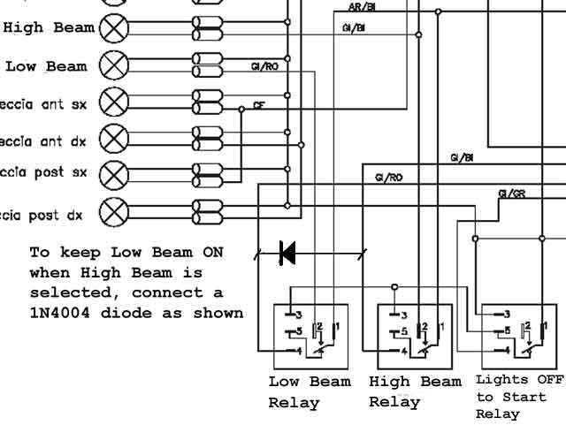
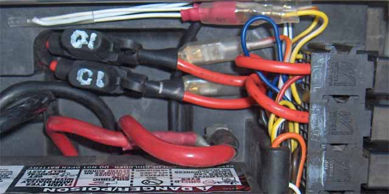

The lights on a Tornado are great for the Autobahn, but next to useless in a mountain pass. While the high beam projects a great distance, there's next to no spread. This makes it particularly difficult to negotiate tight corners at speed. You just can't see far enough into the corner.
It helps to hold the flasher button down, with low beam selected, to get a little more spread. Still not brilliant, but better.
If you get sick of holding your flasher button down, change your lighting circuit, as follows, to keep the low beam ON, when the high beam is selected.
|  |  |
(The large red wires place a fuse in series with each of the low & high beam lamps. This is in preparation for installing a pair of 55W High Intensity Discharge lamps.)